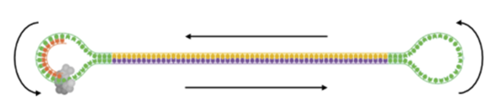

Chapter 11 Continuous Long Reads

Before carrying out any specific commands we will first move into the relevant directory.
cd ~/QC_workshop/PB_QC/data/CLRUse ls to list the contents of this directory. You will see that there are BAM subreads and scraps files for three samples, plus their BAM index files. These data were generated from high molecular weight DNA for de novo genome assembly.
We will use the SequelTools program to both assess and filter our PacBio CLR data. First we need to make a file of filenames (fofn) for the subreads files. You can do this with the following commands:
find $(pwd) -name "*subreads.bam" | sort > CLR_subreads.txtThis command line will find all of the files in our current working directory whose names end in 'subreads.bam', sorts them alphanumerically and prints these names into a new text file.
11.0.1 Quality check

The SequelTools program has three different tools, specified with the -t argument, which are:
Qfor quality controlSfor subsampling the dataFfor filtering the data
We will first use Q to assess our data. Other options used are:
-uto specify the file containing the list of subread .bam files-oto specify the name of an output folder for the plots-pto specify which plots to produce:bfor a few basic plots,iincludes a few more detailed plots andagenerates all available plots.
SequelTools.sh -t Q -p a -u CLR_subreads.txt -o CLR_QCWhen this has finished running the CLR_QC folder will contain a 'summaryTable.txt' file with values on the number and lengths of sequence reads for all three samples, plus a series of plots saved as pdf files. We can use firefox to view the pdf plots.
firefox CLR_QC/totalBasesBarplot.pdfThis shows the total amount of sequence data for each of the three samples, both for all of the subreads present and 'longestSubs' (the longest subread within each CLR). We can see that Sample2 has the largest amount of data, and for all three samples most of the data is contained within the longest subreads. This is expected with CLR data - long fragments of DNA are extracted for sequenicng and we often achieve just a single pass of this insert during the PacBio sequenicng run.
There are also plots for the N50 and L50 of each sample:
firefox CLR_QC/n50s.pdf CLR_QC/l50s.pdf- N50 = the median sequence length (in bp) of the data; 50% of the sequence data generated is in subreads equal to or greater than this length.
- L50 = the minimum number of subreads whose length makes up the N50 value.
We can see that the N50 is larger for Sample3 compared to Sample1 and Sample2, suggesting the subreads are longer for Sample3. Conversely, the L50 is higher for Sample2, suggesting the subreads are shorter for this sample as more subreads are required to make up the N50 value.
We can see information on the subread lengths in more detail as boxplots and histograms in the following plots:
firefox CLR_QC/subreadSizesBoxplots.pdf CLR_QC/*Hists.pdfThe boxplots show that Sample3 does indeed have the longest subread lengths, and highest N50 as indicated by the blue diamond. Sample2 has a larger range of subread lengths than Sample1, but has a slightly lower median length and N50 value.
The histograms show the distribution of subread lengths in more detail. Sample3 shows a big spike of very short subreads - why do you think this is? (We'll come back to this after the filtering step!)
11.0.2 Filtering

Our quality check of the PacBio data doesn't include any assessment of sequence quality. Unaligned PacBio data doesn't have a quality score in the same way as the Illumina data we looked at on Tuesday. Quality scores for PacBio are generated when the reads are aligned - either to a reference sequence or subreads aligned to each other to generate CCS reads. However, it is often a good idea to use just the longest PacBio reads for a de novo assembly.
To filter the data by minimum CLR length we will use SequelTools option -t F.
Other options used are:
-uto specify the file containing the list of subread .bam files-cto specify the file containing the list of scraps .bam files-Cto specify to filter by minimum CLR length-Zto specify the minimum length to keep a CLR-fto specify the format of the output files:s=sam,b=bam,2=both-oto specify the name of an output folder for the filtered data files
First we need to make a fofn for the scraps.bam files, as these are needed when using the filtering tool:
find $(pwd) -name "*scraps.bam" | sort > CLR_scraps.txtThen we can run the filtering command. Here we will keep only CLRs of at least 10,000 bp:
SequelTools.sh -t F -u CLR_subreads.txt -c CLR_scraps.txt \
-C -Z 10000 -f b -o filteredWhen this has finished running the 'filtered' folder will contain filtered BAM files for all three samples. Move into this folder using cd:
cd filteredFrom here let's run the quality control tool on the filtered files and compare the plots to those from the raw files. First we need a new fofn for the filtered subread files:
find $(pwd) -name "*subreads.bam" | sort > filt_subreads.txtThen run the quality control tool again:
SequelTools.sh -t Q -p a -u filt_subreads.txt -o filt_QCWhen this has finished running the 'filt_QC' folder will contain a text file of summary values and a series of plots saved as pdf files. We can view these as before, for example:
firefox filt_QC/subreadSizesBoxplots.pdfAnd compare this to the boxplots from the unfiltered data:
firefox ~/QC_workshop/PB_QC/data/CLR/CLR_QC/subreadSizesBoxplots.pdfThe difference looks quite subtle on the plots as the size range of reads is large, but the subread N50 value (indicated by the blue diamond) has increased by ~2,000 bp in the filtered data for Sample2 and Sample3.
There are also still subreads present in the data that are < 10,000 bp. This is because we have filtered out CLRs that are < 10,000 bp, but a CLR > 10,000bp can still be made up of subreads smaller than this.
This is definitely the case for Sample1 and Sample2, where the DNA fragment length of the library was shorter than the CLR lengths, hence there are subreads < 10,000 bp within longer CLRs.
Sample3 shows a more obvious difference before and after filtering:
firefox ~/QC_workshop/PB_QC/data/CLR/CLR_QC/Sample3.readLenHists.pdf \
filt_QC/Sample3_flt.readLenHists.pdfFor this sample the DNA fragment length of the library was much greater than 10,000 bp, and so the majority of CLRs consist of just one pass of this long insert. The large number of short subreads remaining in the filtered file (blue bars) represent subreads only partially sequenced on the 'return journey' of the circular library DNA molecule. These are not present when we look only at the longest subread present in each CLR (green bars).
SequelTools doesn't have an option for filtering subreads by length. To do this we can convert the filtered BAM file to a fastq or fasta file and use another downstream tool. The fastq file will not contain any useful information on sequence quality (every base is assigned a quality character of '!' which is equal to zero), but this file format is useful if only fastq format is accepted as input for a downstream tool.
To do this use the commands pbindex and bam2fastq from the smrttools package:
pbindex Sample1_flt.subreads.bamNote that you may see a long warning message ending with "No such file or directory". However, if you run ls you should see that the output file has been generated.
This command generates a .pbi index file that is needed before we can convert the BAM file to fastq format. The bam2fastq command requires an output file prefix name, specified by -o, and the name of the BAM file we want to convert:
bam2fastq -o Sample1_filtered Sample1_flt.subreads.bamYou should now have a compressed fastq file for the CLR-filtered subreads from Sample1.